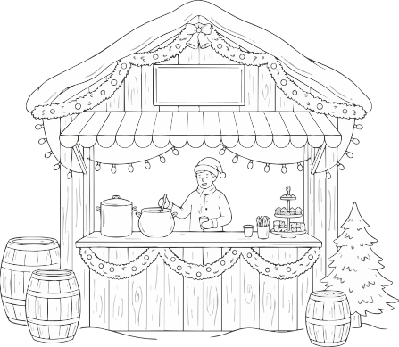
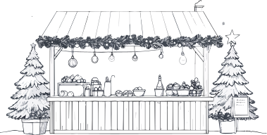

Træd indenfor i juleværkstedet, hvor du male keramik og dekorere
lys, mens julemusikken spiller.
Skab en personlig gave til én, du holder af, tag dit kunstværk med
hjem som et særligt juleminde, eller vælg at donere det til et
menneske, som måske ellers ikke får en julegave i år.
Du behøver ingen erfaring, kun lysten til at være kreativ og dele
lidt af julens magi.
Hver kop, lysestage eller hvert håndmalede lys bærer en historie
om nærvær, omsorg og glæden ved at skabe noget med hjertet.
For nogle bliver det en hyggelig stund med pensel og farver. For
andre kan det blive en uventet gave, der bringer lys og glæde i
juletiden.
Kom og vær med til at sprede lidt julemagi \- til dig selv eller
til én, der har brug for en ekstra tanke denne jul.
Klippe/klistre
Kom indenfor i vores hyggelige juleværksted og lad dig rive med af
julens kreative magi. Her kan du klippe, klistre og skabe smukke
julekort, pynt, guirlander og små personlige gaver, mens
julemusikken spiller, og duften af jul fylder rummet.
Det, du skaber, kan du tage med hjem og gøre til en del af din
egen jul. Du kan også vælge at donere dit værk til et menneske,
som måske ikke har nogen at fejre med eller ikke får en julegave i
år.
Du behøver hverken være kreativ ekspert eller have prøvet det før.
En håndlavet julehilsen eller et stykke julepynt kan bringe glæde,
varme og følelsen af at være husket.
Sammen fylder vi værkstedet med grin, glimmer, papirklip og
julehjerter, mens vi spreder lidt ekstra lys i den mørke tid.
Kom og vær med til at skabe julemagi \- til dig selv eller til én,
der trænger til en ekstra varm tanke denne jul.
Linoleumstryk
Træd indenfor fra vinterkulden og ind i et værksted fyldt med
duften af jul, kreative idéer og varm julehygge.
Du kan vælge at lave en særlig julegave eller hilsen til et
menneske, som ellers ikke har så meget at pakke op juleaften. Et
håndlavet tryk bærer noget helt særligt med sig: tid, omtanke og
varme fra menneske til menneske.
Hvis dit kunstværk kalder på en plads hjemme hos dig selv, er du
naturligvis også velkommen til at tage det med hjem som en
personlig julegave eller et minde om en hyggelig stund i
værkstedet.
Du behøver hverken erfaring eller særlige forudsætninger. Kom som
du er, lad hænderne arbejde, og vær med til at sprede lidt ekstra
julelys i den mørke tid.
Sammen skaber vi ikke bare smukke tryk, men også små glimt af
julens magi, som kan rejse videre og glæde andre.
Smykkeværksted
Kom forbi vores hyggelige smykkeværksted på julemarkedet og vær
med til at sprede lidt ekstra juleglæde.
Her kan du designe og fremstille et personligt smykke i en
afslappet og kreativ atmosfære. Du bestemmer selv, om dit smykke
skal blive en særlig julegave til én, der ellers ikke ville
modtage en gave i år, eller om du ønsker at tage det med hjem til
dig selv eller en, du holder af.
Vi tror på, at de små håndlavede ting kan gøre en stor forskel.
Hvert smykke bliver skabt med omtanke, og når du vælger at donere
dit smykke, er du med til at sende varme tanker og juleglæde
videre til et andet menneske.
Værkstedet er åbent for både børn og voksne, og du behøver ingen
erfaring på forhånd. Vi sørger for materialer, inspiration og
hjælp undervejs.
Kom indenfor, mærk julestemningen, vær kreativ og vær med til at
gøre en forskel. Vi glæder os til at se dig.
Dekorationer
Kom i julestemning og vær med til et hyggeligt kreativt værksted,
hvor vi sammen binder adventskranse og laver smukke
juledekorationer. Her handler det ikke kun om gran, lys og
julehygge, men også om at gøre en forskel for andre.
Du kan vælge at tage din egen dekoration med hjem eller donere den
som en julegave til et menneske, der ellers ikke har så meget at
glæde sig over i juletiden. På den måde bliver din kreativitet til
en varm tanke og en håndsrækning til én, der har brug for lidt
ekstra julelys.
Værkstedet er åbent for alle, uanset erfaring. Vi sørger for
materialer, inspiration og en hyggelig atmosfære med plads til
fællesskab, nærvær og gode samtaler.
Tag familie, venner eller naboer med, og vær med til at skabe både
smukke dekorationer og små øjeblikke af juleglæde. Sammen kan vi
gøre julen lidt varmere for flere.
Vi glæder os til at se jer til en dag fyldt med kreativitet,
fællesskab og velgørenhed.
Madboder

Glögg og varm kakao

Æbleskiver og vafler
Flæskestegssandwich
Risengrød
GIV JULEN VIDERE
Find vej og/eller skab juleglæde
VEJVISNING + BLIV JULEHJÆLPERPlanlæg dagen og tag dit kort med
Velkommen til julemarkedets kreative hjerte. På kortet finder du
både boder og værksteder, hvor du kan skabe personlige julegaver,
dele juleglæden og møde de frivillige, der gør en forskel for
andre i juletiden.